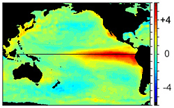
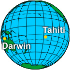
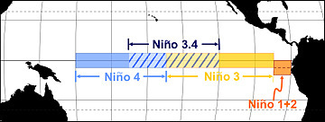
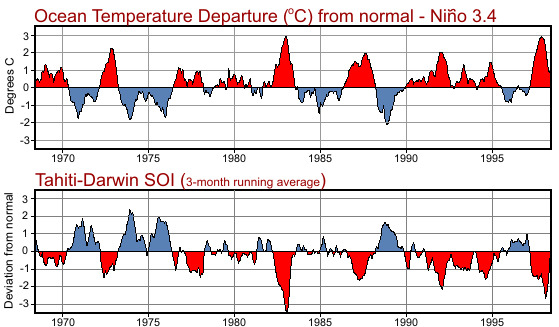

El Niño Southern Oscillation (ENSO)

From December 1997, this image shows the change of sea surface temperature from normal. The bright red colors (water temperatures warmer than normal) in the Eastern Pacific indicates the presence of El Niño.
One of the most prominent aspects of our weather and climate is its variability. This variability ranges from small-scale phenomena such as wind gusts, localized thunderstorms and tornadoes, to larger-scale features such as fronts and storms to multi-seasonal, multi-year, multi-decade and even multi-century time scales.
Typically, long time-scale events are often associated with changes in atmospheric circulations that encompass vast areas. At times, these persistent circulations occur simultaneously over seemingly unrelated, parts of the hemisphere, and result in abnormal weather, temperature and rainfall patterns worldwide.
El Niño is one of these naturally occurring phenomenon. The term El Niño (the Christ child) comes from the name Paita sailors called a periodic ocean current because it was observed to appear usually immediately after Christmas. It marked a time with poor fishing conditions as the nutrient rich water off the northwest coast of South America remained very deep. However, over land, this ocean current were heavy rains in very dry regions which produced luxurious vegetation.

Further research found that El Niño is actually part of a much larger global variation in the atmosphere called ENSO (El Niño/Southern Oscillation). The Southern Oscillation refers to changes in sea level air pressure patterns in the Southern Pacific Ocean between Tahiti and Darwin, Australia.During El Niño conditions, the average air pressure is higher in Darwin than in Tahiti. Therefore, the change in air pressures in the South Pacific and water temperature in the East Pacific ocean, 8000 miles away, are related.
With the occurrence of warmer than normal temperature in the Eastern Pacific it stands to reason that there will be periods where the water temperature will be cooler than normal. The cooler periods are called La Niña. By convention, when you hear the name El Niño it refers to the warm episode of ENSO while the cool episode of ENSO is called La Niña.
ENSO is primarily monitored by the Southern Oscillation Index (SOI), based on pressure differences between Tahiti and Darwin, Australia. The SOI is a mathematical way of smoothing the daily fluctuations in air pressure between Tahiti and Darwin and standardizing the information. The added bonus in using the SOI is weather records are more than 100 years long which gives us over a century of ENSO history.

Sea surface temperatures are monitored in four regions along the equator:- Niño 1 (80°-90°W and 5°-10°S)
- Niño 2 (80°-90°W and 0°-5°S)
- Niño 3 (90°-150°W and 5°N-5°S)
- Niño 4 (150°-160°E and 5°N-5°S)
These regions were created in the early 1980s. Since then, continued research has lead to modifications of these original regions. The original Niño 1 and Niño 2 are now combined and is called Niño 1+2. A new region, called Niño 3.4 (120°-150°W and 5°N-5°S) is now used as it corrolates better with the Southern Oscillation Index and is the prefered region to monitor sea surface temperature.

The two graphs (right) shows this corrolation. The top graph shows the change in water temperature from normal for Niño 3.4. The bottom graph shows the southern oscillation index for the same period. When the pressure in Tahiti is lower than Darwin, Australia the temperature in Niño 3.4 is higher than normal and El Niño is occurring; the warm episode of ENSO.Conversely, when the pressure in Tahiti is higher than Darwin, Australia the temperature in Niño 3.4 is lower than normal and La Niña is occurring; the cool episode of ENSO.
What is suprising is these changes in sea surface temperatures are not large, plus or minus 6°F (3°C) and generally much less. However these minor changes can have large effects our global weather patterns.